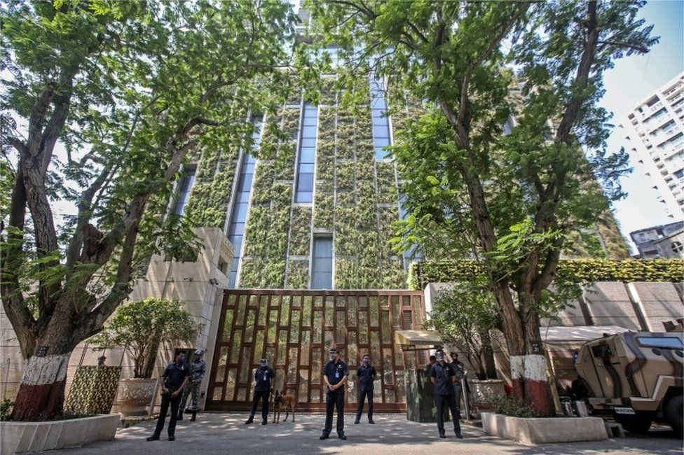
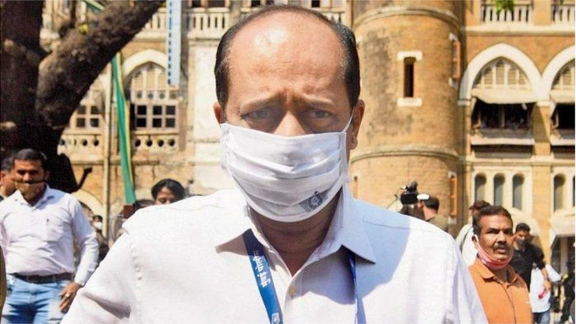

Asia's richest man, a bomb scare and a murder in India
On the morning of 25 February, a vehicle laden with explosives was found near the house of Mukesh Ambani, Asia's richest man, in the heart of Mumbai.
In the following days, the body of the alleged owner of the vehicle washed up in the sea near India's bustling commercial capital, and a police officer reportedly known to the dead man was arrested.
Federal detectives are now investigating the mystery, which has quickly turned into a tantalising whodunit with a lot of loose ends.
How did it all begin?
According to Mumbai police, the security staff at Antilia, Mr Ambani's opulent 27-storey home, spotted the green-coloured Indian-made Scorpio SUV parked nearby on the morning of 25 February and informed them.
The police arrived with bomb disposal experts, secured the area and examined the empty vehicle.
Inside, they found 20 sticks of gelignite, weighing around 2.5kg. Gelignite, invented by Swedish chemist Alfred Nobel, is a cheap explosive that cannot explode without a detonator.
The sticks were loose and not connected to each other or to a device. A ballistic expert told India Today that the explosives, if detonated, were "enough to blow up the car".
Also found in the vehicle were five vehicle registration plates and a printed note, addressed to Mr Ambani and his wife, Nita.
"This is a trailer, but next time we will connect [all these explosives] and come. We have made arrangements to blow up your entire family," the note said.
Mr Ambani, who is the chairman of Reliance Industries, has an estimated fortune of more than $76bn (£54bn). The group's core business is oil refining but it also has major investments in other sectors, including retail and telecoms.
What do we know about the abandoned vehicle?
Mumbai police scanned the CCTV footage from the night when the mysterious vehicle appeared outside Mr Ambani's residence on Carmichael Road, an exclusive residential neighbourhood dotted with upscale bungalows and apartment buildings.
They found the Scorpio waiting at a busy junction, some 15km (9.3 miles) from Mr Ambani's residence around midnight.
At 01:40 local time, a white Toyota SUV joined the vehicle and both drove through deserted streets up to Carmichael Road, where Mr Ambani and his family have been living for the past 10 years.
Both the vehicles reached the location around 02:30 local time. The Toyota SUV trailed the explosives-laden Scorpio. The Scorpio came to a halt some 500 metres from Mr Ambani's house.
Then, police say the footage shows a man in protective gear coming out of the Scorpio and getting into the Toyota. The Toyota then drove off into the night.
Cameras spot it on the expressway and entering the suburb of Thane before it goes out of CCTV coverage.
So who owned the bomb-laden car?
Police traced the abandoned Scorpio to Mansukh Hiren, a local businessman who owned a car accessories shop in Thane.
Under questioning, Mr Hiren told investigators that the vehicle belonged to another man, who had failed to pay him for a vehicle renovation job. So, Mr Hiren said he had "taken possession" of it.
He also told the police that on 17 February, he was travelling on an expressway near Mumbai when the steering of the vehicle jammed. He parked the vehicle there and went home, he said.
When he returned the next morning to pick up the car, it wasn't there. He lodged a police complaint at the nearest police station.
Soon, the case of the bomb-laden vehicle outside Mr Ambani's house whipped up a political storm in Maharashtra. On 5 March, an opposition leader said Mr Hiren should be provided protection as he was a key witness in the case.
Hours later, news networks reported that Mr Hiren's body had washed up in a creek near Mumbai.
What do we know about Mansukh Hiren's death?
Police say that on the evening of 4 March, he left his shop for home.
On reaching home, he told his family that he had received a call from a policeman called "Officer Tawde" and that he was going out to meet him.
Mr Hiren didn't return that night. The next day his family reported him as missing.
The police later said Mr Hiren had left home at eight in the evening and his phone was switched off a little more than three hours later. The identity of the policeman who he said he was going to meet is still unknown.
As police began investigations, they were informed about a body washing up on the shore.
They said the bloated body in the creek had "four-five handkerchiefs" tied around the face.
A preliminary post-mortem report suggested drowning but a full report is awaited. Cause of death has still to be announced.
Mumbai police have registered a case of murder, criminal conspiracy and destruction of evidence against "an unknown person" on the complaint of Mr Hiren's wife.
Meanwhile, the inquiry into the explosives-laden car is being conducted by the National Investigation Agency (NIA), a federal anti-terror unit.
Why has a police officer been arrested?
Among the policemen who reached Carmichael Road on receiving information about the abandoned vehicle was Sachin Vaze, an assistant inspector with the elite crime branch of the Mumbai police.
Mr Vaze has said he "reached the spot three-to-four hours" after the local police team and senior officers.
On 13 March, federal detectives arrested Mr Vaze after questioning him for 12 hours in connection with the case.
The next day, the detectives found the missing Toyota SUV in a garage belonging to the crime branch of the Mumbai police.
Investigators believe Mr Vaze was part of a plan to park the car with explosives outside Mr Ambani's house, an allegation that the police officer denies.
The NIA has charged the officer with conspiracy, criminal intimidation and negligent conduct in dealing with explosives, and a court has rejected his appeal for bail.
Meanwhile, Mr Hiren's wife told reporters that her husband knew Mr Vaze well, and the two had been using the Scorpio for nearly two years. She said her husband had "been going out and returning home" with Mr Vaze.
Mr Vaze has told reporters that he knows nothing about Mr Hiren or his death.
Who is Sachin Vaze?
Sachin Vaze joined the police in 1990.
In Mumbai, he worked with a team of "encounter specialists" - a small, tightly-knit group of policemen who are given much of the credit for cleaning up crime in the city during the late 1990s.
They were dreaded by criminals, loathed by human rights activists and envied by their colleagues. Their detractors say they are a law unto themselves, often hobnobbing with criminals.
In May 2004, Mr Vaze was suspended in connection with the death of a 27-year-old software engineer in police custody. Khwaja Yunus had been picked up by Mr Vaze and his team in connection with a blast in the city. Mr Vaze had denied any responsibility for Yunus's death.
He resigned from service in 2007, but his resignation was not accepted.
In 2008, the suspended officer joined Shiv Sena, the right-wing party which now leads the coalition ruling Maharashtra state, of which Mumbai is the capital. Shiv Sena leaders say that he was "not politically active".
Last June, his suspension was finally lifted and Mr Vaze rejoined the force to head the Crime Intelligence Unit of the crime branch.
Officials explained his reinstatement as a Covid-19 measure to tide over staff shortage, but critics said it was a political favour returned to a suspended officer.
Last week, Mumbai police suspended Mr Vaze for a second time. He is now in police custody. His lawyers have denied all the allegations against him.
What are the unanswered questions?
There are several - here are some:
- What was the motive behind parking a vehicle packed with explosives close to Mr Ambani's home?
- Why was it being trailed by another vehicle - which was later found in a police garage?
- Who were the people driving these two SUVs?
- Was the bomb-laden vehicle really stolen?
- Who killed Mr Hiren? And why?
Related topics
India Mumbai AsiaInside world's ‘priciest house’
18 May 2012
Asia's richest man takes on retail giant Amazon
2 January 2020
More Videos from the BBC
Recommended by Outbrain